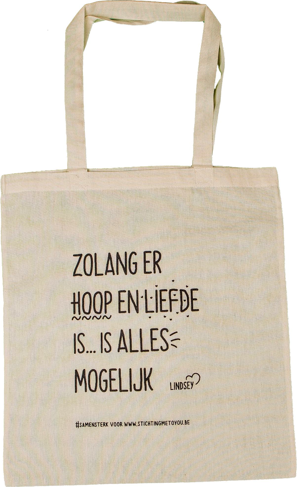

Wij zijn vier laatstejaarsstudenten Grafische en Digitale media aan de AP Hogeschool. In het kader van onze opleiding nemen we deel aan de Warmste Week van Studio Brussel. In de zoektocht naar een goed doel om te steunen waren we meteen gecharmeerd door de sterke boodschap van Me To You. Daarom wilden we graag voor deze stichting een actie opzetten.
De stichting Me To You is sinds 2014 actief en steunt specifieke onderzoeksprojecten. Ze willen de verdere opmars van leukemie en aanverwante vormen van beenmerg- en bloedziekten tegengaan. Me To You werd opgericht ter nagedachtenis van Els Maes, een sterke vrouw die na drie lange jaren de strijd tegen leukemie verloor.
Meer informatie kan je vinden op www.stichtingmetoyou.be.
Lindsey De Grande (27) liep Europese top op de 1.500 meter en volgde de studie kinesitherapie met succes. Op 21-jarige leeftijd kreeg ze de diagnose chronische leukemie. We gingen met haar praten over de invloed van deze ziekte op haar leven.
'Ik herinner me eigenlijk veel. De dag van m'n diagnose zal ik denk ik, ook nooit vergeten. Ondanks dat ik hoop tachtig jaar te mogen worden. Op mama haar verjaardag moesten we naar het ziekenhuis voor mijn bloedresultaten. Ik had nog ontbijt op bed gemaakt, maar ze kreeg geen hap binnen. Op weg naar het ziekenhuis, een rit van anderhalf uur, was mama muisstil. Ik was meer op van de zenuwen omdat ik vond dat mama niet in haar gewone doen was, dan dat ik me eigenlijk zelf druk maakte.
Maar dan zegt de professor to-the-point: "Slecht nieuws, je hebt chronische leukemie." Op dat moment stort je wereld in.
Ik kom terug in die wachtzaal en zie daar vooral oudere mensen zitten. Je denkt echt van: hoe ben ik hier beland? Je bent 21 jaar, topsporter en plots behoor je tot de groep kankerpatiënten, als je dat zo zwart-wit mag uitdrukken. We zijn eigenlijk nog redelijk snel terug naar huis gegaan. Mijn zus, papa en Jens, waarmee ik ondertussen getrouwd ben, waren allen afgekomen. En hoe gek dat het ook mag klinken, het enige wat ik kon bedenken, was: "Ik ga lopen". Ja, dat is heel absurd, maar dat was mijn enige houvast. Dat is ook de afgelopen jaren zo gebleven. Ik voelde me zo radeloos en zowat alles viel aan diggelen. Een van de weinige dingen waar ik vat op had, was vaak m’n lopen.
'Mensen vragen me dat nogal vaak maar het is moeilijk om uit te leggen. Ik heb altijd gelopen omdat ik dat gewoon ook graag doe. Daarnaast ben ik iemand die doelen en dromen nodig heeft en in het lopen vind ik dat. Hoever kan ik ermee geraken? Wat is het uiterste dat ik uit mezelf kan halen? Ik push mijn lichaam. Soms vervloek ik mezelf dan, maar als het lukt dan krijg ik een voldoening die ik eigenlijk nergens anders kan halen. Toen ik net ziek was, liep ik nog steeds graag, maar ik kreeg op een bepaald moment wel een soort haat-liefdeverhouding met lopen. Ik vergeleek zodanig met voordien, maar mijn lichaam is totaal niet meer zoals voorheen. Ik liep bijvoorbeeld een halve minuut trager per kilometer terwijl ik meer afzag. Of ik liep dezelfde tijden, maar mijn hartslagen lagen plots dertig slagen hoger. Ik ben er uiteindelijk wel doorgeraakt. Wanneer ik bijvoorbeeld niet veel energie heb en toch een uurtje ga lopen dan denk ik: ik heb dat toch gedaan vandaag. Dat kunnen ze niet meer van mij afnemen. Wanneer je je slecht voelt van niets te doen en je je even slecht voelt van te gaan lopen, dan kan je toch beter gaan lopen. In mijn geval toch.'
'Ik denk dat het belangrijk is dat mensen ergens hoop en doelen blijven koesteren en in mijn geval vind ik dit onder andere in m’n lopen. Ik hoor wel bij veel mensen dat iedereen op zijn manier ergens een doel heeft waardoor al die dagen, die soms zo tergend langzaam gaan, toch passeren, en wat gebundeld worden. Waardoor je op een of andere manier toch een methode vindt om met de ziekte en alles wat erbij komt kijken, probeert om te gaan. Ik weet niet of er ooit een moment komt dat ik genezen ben of dat de nevenwerkingen gaan beteren. Lopen, quality time met m’n dierbaren, en proberen te genieten van kleine dingen, zijn mijn houvast om toch te durven kijken naar de toekomst. Een houvast van: dit kan ik nog, en in het geval van m’n lopen, misschien dat ik binnen een paar maanden weer ietsje meer kan.'
'Ik heb eigenlijk al drie soorten medicatie genomen. Vermoeidheid is de rode draad bij alle medicaties. Bij de derde behandeling, die ik nu neem, zijn de zwaarste nevenwerkingen draaierigheid en zenuwpijnen. Op de hoogste dosis die ik in het begin moest nemen, kon ik zelfs niet autorijden. Dat was echt te gevaarlijk. Bovenop die nevenwerkingen heb ik ook nog altijd vermoeidheid, spierpijn en hoofdpijn.'
'Ik moet eerlijk zeggen dat de echte impact eigenlijk pas maanden en jaren later nog doordringt. In het begin ben je in een soort overlevingsmodus en denk je: “Ik moet hier door en dat gaat wel lukken. We gaan dat hier een keer snel oplossen.” Uiteindelijk besef je dat snel absoluut niet thuishoort in dat verhaal. En wat is oplossen? Dus laten we zeggen dat ik nu nog altijd dag na dag een beetje besef wat het allemaal met zich teweeg brengt en blijf zoeken naar een manier om daar mee om te gaan.'
'Je probeert leukemie zo weinig mogelijk je leven te laten veranderen, maar eigenlijk verandert het een beetje alles. Vooral het onbezorgde gaat weg. Ik sta op en ik zie wel wat ik doe vandaag. Dat heb ik sinds de diagnose nooit meer gehad omdat ik een beperkte energie heb van, laat ons zeggen, één tot twee uur per dag. Met enkele uren per dag, op goeie dagen, geraak je al niet ver. Op slechte dagen al zeker niet. Dus in die zin bepaalt de vermoeidheid veel in je leven. De pijn probeer ik te onderdrukken, vooral op momenten wanneer ik iets gepland heb. Maar die pijn kan je maar verbijten tot op een bepaald niveau en dan bereik je je drempel. Ik word dan soms echt slechtgezind en kortaf.
Leukemie heeft in grote lijnen wel mijn vroegere toekomstplannen veranderd. Ik deed topsport en volgde mijn studie. De studie zou ik afbouwen om mijn topsport echt uit te werken. Ik zou dat doen tot rond mijn 32 jaar. Daarna zou ik een eigen kinepraktijk opstarten en aan kindjes beginnen. Die planning is gewoon helemaal weggevallen. Ik heb wel nog grotendeels dezelfde dromen en doelen, maar de tijdslijn is compleet veranderd. Enerzijds besef ik dat ik in het nu moet leven, dat ik er nu voor moet gaan. Langs de andere kant heb ik er de energie niet voor, dus dat voelt wat dubbel aan.'
Wij als gezin steunden elkaar altijd al en dat is alleen maar sterker geworden door mijn ziekte. Je hebt soms het gevoel dat niemand je begrijpt, terwijl zij wel net degenen zijn die het meeste hun best doen om je te begrijpen. Soms, als je ambetant bent, zijn zij de eerste mensen die je afstoot, gewoon uit onmacht. Eigenlijk zijn zij de laatste die het verdienen. Ik denk dat liefde en vertrouwen daarin heel belangrijk zijn. En proberen erover te communiceren. Dat doen we dus wel.’
'Ik besef dat als je zelf niet in die situatie zit, je onmogelijk kan weten wat het teweeg brengt. Je kan uren naar iemand luisteren, maar als je het niet als patiënt of dierbare meemaakt dan denk ik dat dat quasi onmogelijk is. Maar op zich is dat geen ramp, want ook als je het niet begrijpt kan je er echt zijn voor iemand anders en elkaar steunen. Waar ik een beetje probeer tegen in te gaan, is het zwart-wit denken in de maatschappij. Je bent ziek of gezond. Je kan gaan werken of je kan niets meer. Je ziet er goed uit, dus alles zal wel in orde zijn. Of je bent kaal en opgezwollen dus je bent afgescrheven voor de maatschappij. Mensen kunnen soms heel hard voor elkaar zijn en oordelen heel snel, maar wat je denkt te zien of te weten, is zelden de waarheid en de realiteit. Als je niet weet hoe het met iemand gaat, laat die dan met rust als je er geen tijd en energie in wil steken. Maar ik hoop dat je het vooral wel écht wilt weten, en vraag er dan ook eerlijk naar. Luister oprecht naar het antwoord. Dan zul je merken dat je op basis van het eerste zicht, er vaak naast zit. En die steun voor elkaar, dat luisterend oor, dat hoeft absoluut niet alleen bij kanker zo te zijn. Zoveel mensen zitten met problemen of hebben moeilijkheden, maar kunnen bij niemand terecht. Ik vind dat heel jammer omdat ik zelf met momenten heb gevoel hoe eenzaam je je kunt voelen. Op dat momenten weten dat je een paar steunpilaren hebt waar je altijd terecht kan, doet zoveel, kan zelfs wonderen doen. Iedereen verdient die steunpilaren. En iedereen kan ook een steunpilaar zijn voor een ander!
Ik ben ervan overtuigd dat iedere persoon de kracht in zich heeft om iemand anders te helpen of om zelf open te staan voor hulp. Ik ben soms zelf ook te trots of te koppig om te durven zeggen dat het niet goed met me gaat. Dan heb ik iemand nodig die hardnekkig genoeg is om te blijven vragen: “Wat kan ik voor je doen?” Of die het niet vraagt, maar gewoon iets voorstelt. Ik denk dat we meer moeten beseffen dat we elkaar wel echt nodig hebben en dat we elkaar echt wel kunnen steunen. We moeten er ook voor willen openstaan. Je merkt dat je veel meer aankan dan je denkt. Omdat je enerzijds zelf veel sterker bent dan je beseft en anderzijds omdat mensen je ook veel kunnen steunen en samen sterker zijn. Het frustreert mij soms dat mensen met oogkleppen rondlopen en dat het vaak ieder voor zich is. We leven in een prestatiemaatschappij waarbij succesvol leven vaak gelijkstaat aan veel geld verdienen, een goede job hebben en een perfect gezin hebben. Maar dat is niet de essentie van het leven. Perfectie is niet belangrijk, menselijkheid wel. Geen grootse dingen, maar net vele kleintjes. Door mijn ziekte sta ik hier veel meer bij stil. Mij interesseert dat niet meer, of heel weinig, maar het is soms moeilijk om niet met die massahysterie en ‘verwachtingen’ mee te gaan. Je hoort vaak niets anders in de maatschappij. Maar ik geloof wel dat er een tegengewicht kan komen.'
'Onze maatschappij bestaat een beetje uit een goednieuwsshow, maar het is belangrijk dat er ook ruimte is voor de realiteit, al horen daar ook minder goede verhalen bij. Het hoeft niet allemaal rozengeur en maneschijn te zijn. Het is niet omdat je zegt dat het eventjes niet gaat, dat je daarom een pessimist bent. Verder heeft iedereen zijn eigen weg te gaan en iedereen heeft ook zijn eigen ervaring. Er is geen enkele patiënt die de ziekte hetzelfde ervaart, maar het is belangrijk om te beseffen dat dit ook niet hoeft. Het is ook belangrijk dat je toelaat dat iedere persoon er op zijn manier mee omgaat. Er is geen goede manier of dé oplossing. Jouw manier is de beste manier. Je moet jezelf de ruimte geven om jouw weg erin te zoeken. Samen met je dierbaren. Iedereen mag denken en zeggen hoe het moet, maar uiteindelijk zal je het toch zelf moeten doen. De weg is lang en zwaar, maar tegelijk ben ik ervan overtuigd dat mensen veel sterker zijn dan ze denken. Ik hoop dat mensen beseffen dat ze er eigenlijk nooit alleen voor staan. Dat ze het echt wel aankunnen, wat er ook op hun weg komt. Want voor mij is het zo: zolang er hoop en liefde is, is alles mogelijk. Er is veel onzekerheid. Je weet nooit wat de toekomst zal brengen. Maar hoop en liefde geven zoveel kracht dat je wel de mogelijkheid creëert om van dag tot dag vooruit te gaan.'
Wij zijn de afgelopen weken op zoek gegaan naar inspirerende verhalen van personen die vechten tegen leukemie. Deze verhalen willen we delen in de vorm van quotes want samen zijn we sterker. We hebben een aantal quotes laten drukken op tote bags en deze quote bags bieden we nu aan ten voordele van Me To You.
De quote bags kosten €5 per stuk. De opbrengsten gaan volledig naar Me To You en zullen onder andere gebruikt worden om onderzoek naar leukemie te financieren en de begeleiding van leukemiepatiënten.
Begin december kondigen we aan op welke plaatsen onze actie zal doorgaan.
